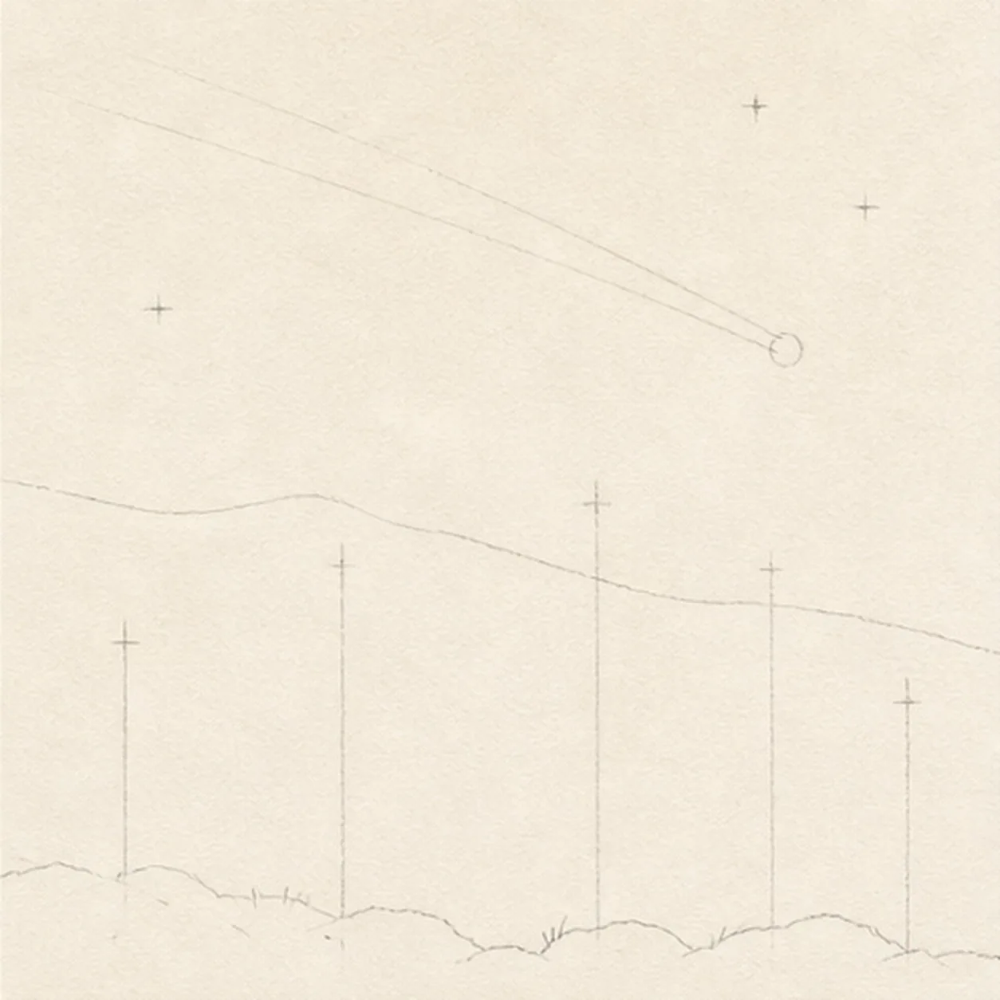
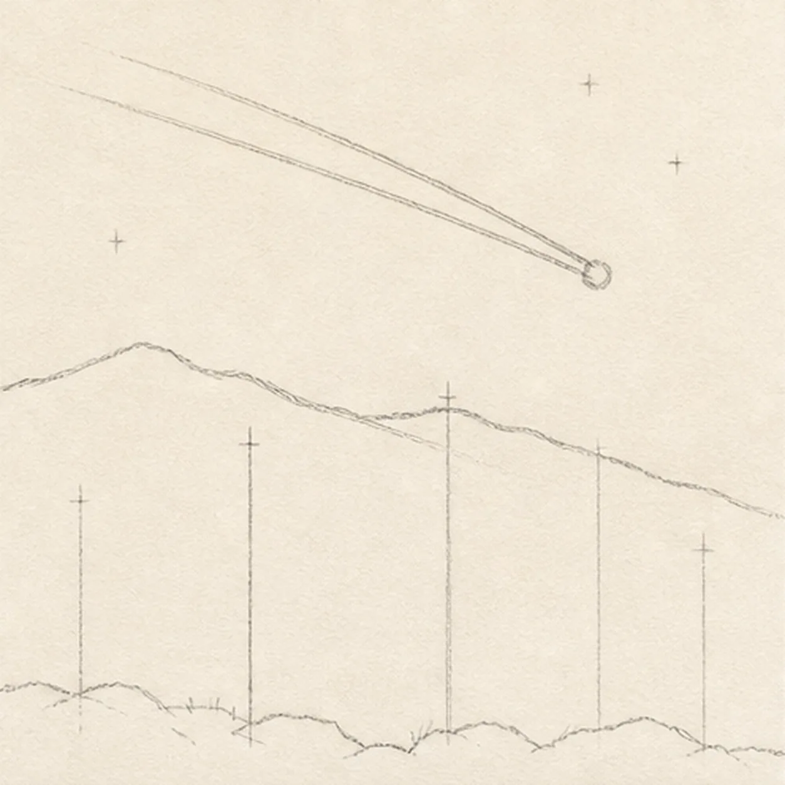
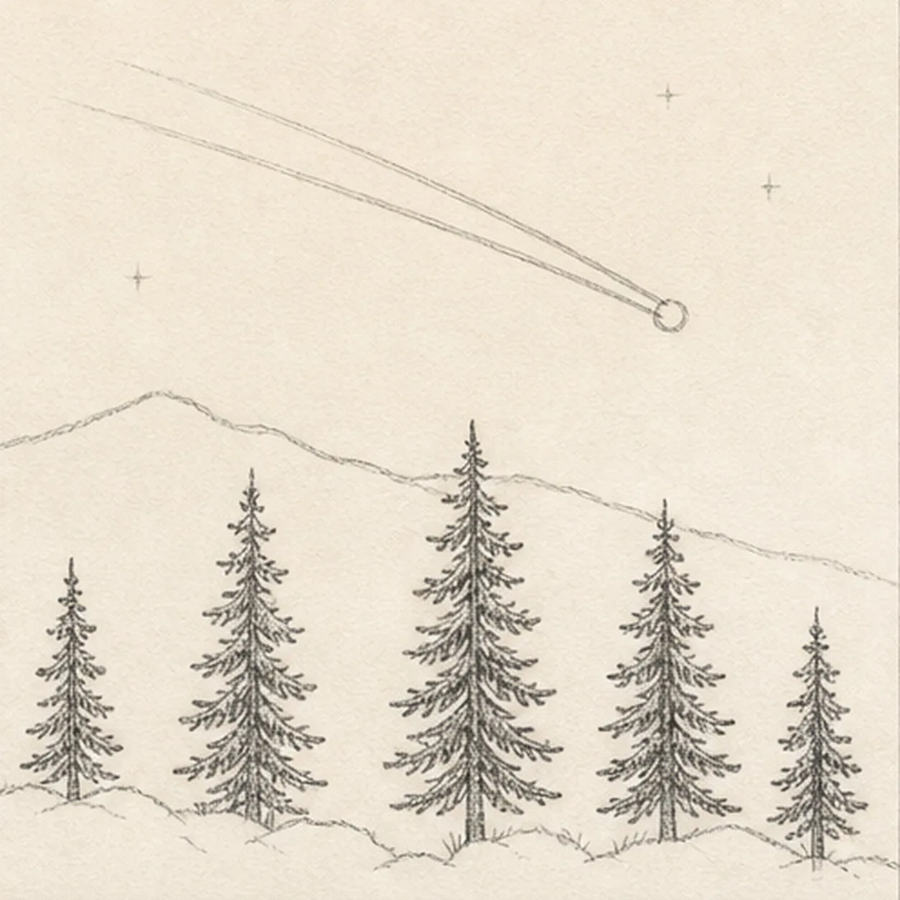
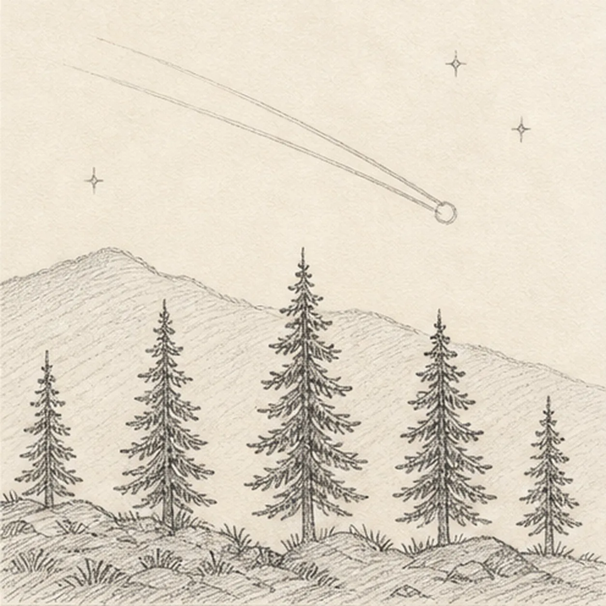
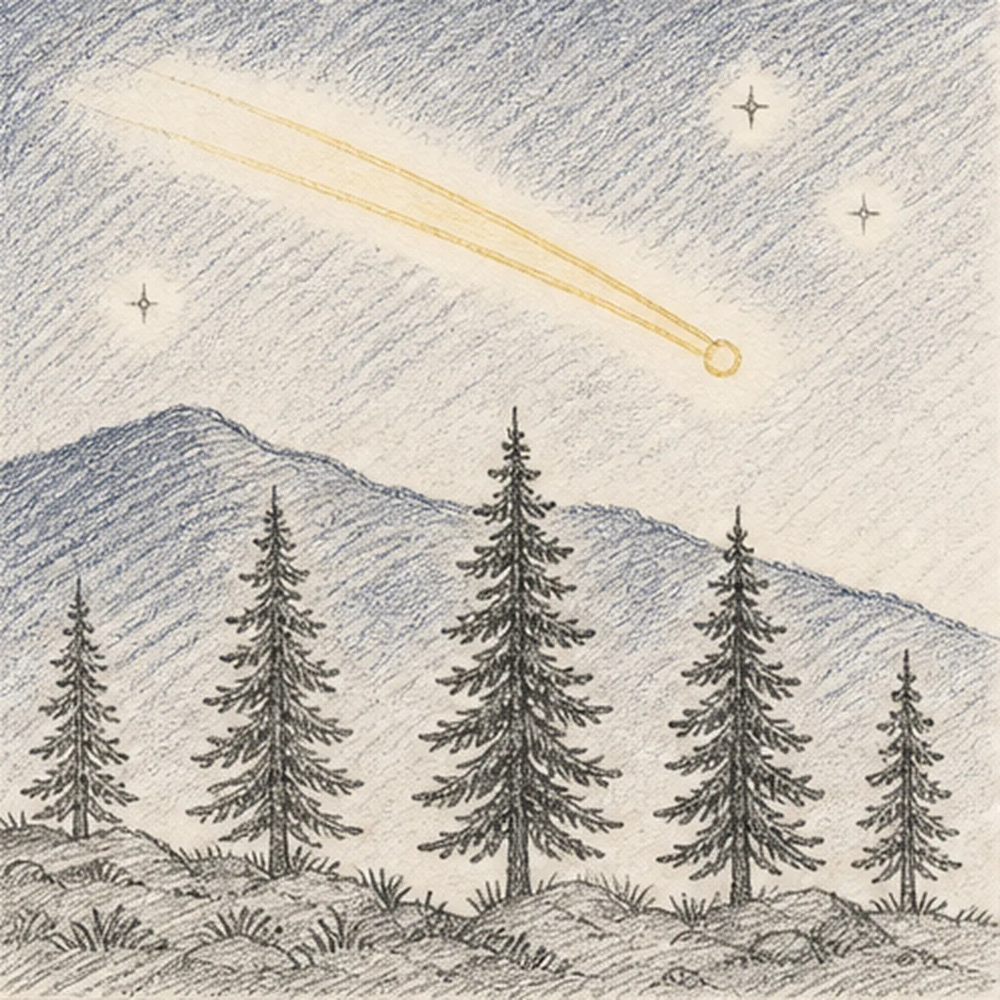

From the archive
Let's draw a shooting star over pine hills
Treat this as one small practice round: build the subject lightly, notice the shapes, then darken only the lines that help the finished sketch.
-
01

Map the night-sky diagonal
Use pale graphite to place one diagonal meteor route, its round head, exactly two wake bands, two hill ridges, exactly five pine footprints, three star centers, and the broken rock-and-grass foreground edge.
Sketch tip: Ghost the meteor diagonal two or three times before touching down, then place the head on the page right and pull both wake routes toward the upper left. Mark all five tree axes and three star gaps now so later shading can stop around them.
-
02

Shape the meteor and hills
Build the small meteor head, two tapered wake bands, and two loose overlapping hill silhouettes while preserving every pale pine, star, glow, and foreground reserve.
Sketch tip: Start both wake bands at the same head and let them narrow together toward the upper left. Pull each ridge in one relaxed uneven pass, then compare the open sky above the nearer and farther hills before adding any trees.
-
03

Plant the five pines
Refine both hill ridges and build exactly five foreground pine silhouettes of varied heights inside their reserved footprints.
Sketch tip: Draw each trunk axis first, then stack short branch groups from the top down while rotating the page for comfortable strokes. Vary the five heights, but keep the branch masses clear of the meteor glow and stop ridge hatching at every trunk.
-
04

Add the quiet sky detail
Add exactly three small background stars, readable branch rhythm to all five pines, sparse hatching on the distant ridge, and the broken rock-and-grass foreground texture.
Sketch tip: Keep each star small and leave warm paper around it. Use fewer marks on the distant hill than the foreground, then group the rocks and grass into broken clusters instead of outlining every blade.
-
05

Layer the night values
Build directional graphite and restrained indigo-blue pencil over the established hills and sky pockets, then warm only the existing meteor head and two wakes with light yellow pencil.
Sketch tip: Hatch around the meteor and three stars instead of shading through them, and change stroke direction slightly between sky and hills. Build two light color passes rather than one waxy coat so the paper tooth keeps the night luminous.
-
06
![Handmade graphite and restrained colored-pencil sketch of one diagonal shooting star with a small warm-yellow round head on the page right and exactly two tapered yellow wake bands trailing toward the upper left, exactly three small open-paper sky stars, two layered indigo-blue hill ridges, exactly five dark foreground pine trees in varied heights, dense directional graphite night-sky hatching, open warm-paper glow around the meteor and stars, broken rock-and-grass foreground texture, and visible pencil tooth](../assets/shooting-star-over-pine-hills-finished-v1.webp)
Let the shooting star glow
Strengthen selected established contours, deepen the same graphite and colored-pencil values, clarify the reserved meteor and star paper glow, and soften only pale guides that distract.
Sketch tip: Count one meteor head, two wakes, two hill ridges, five pines, and three stars before stopping. Try a different hill profile in your own version if you like, but preserve the large diagonal and the open glow that make the shooting star readable.


![Handmade graphite and restrained colored-pencil sketch of one generic face-free school bus in a front-left three-quarter view with one broad dark windshield, one folding entry-door window, exactly four receding side passenger windows, exactly two visible wheels, two headlights, exactly three muted-red roof marker lamps, one side mirror, two dark horizontal safety bands, one simple front grille and bumper, several small panel seams, tactile directional hatching, school-bus-yellow body color, cool-gray glass and wheel values, open paper highlights, and one broken graphite ground shadow](../assets/school-bus-three-quarter-view-finished-v1.webp)